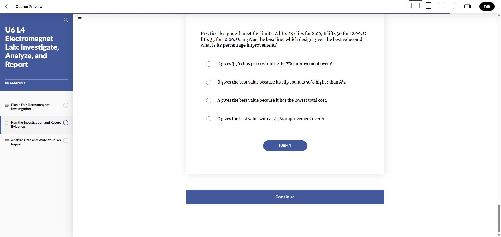
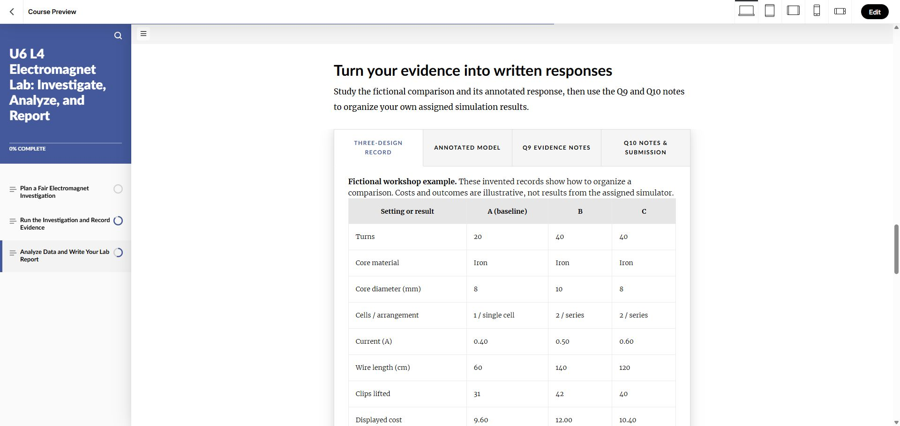

Saved in the Rise authoring course on 11 October 2026. Open the course.
| Area | Revision |
|---|---|
| Simulation controls | Replaced wire diameter with core diameter in the assignment process, recording instructions, and recording diagram. |
| Calculations | Added a native six-panel Process block covering value ratios, best-value comparison, unrounded percentage substitution, final rounding, and application. Every panel has an image; equations stay in the text as native LaTeX. |
| Written model | Added a full fictional three-design table, annotated claim-evidence-reasoning response, and Q9/Q10 notes. |
| Assignment alignment | Removed the unsupported download direction. Opening and ending specify 10 Buzz answers, including Q9/Q10 written responses, and no separate report upload. |
| Repetition | Replaced two explanatory accordions with eight decision questions. Removed two superseded six-panel calculation processes and their obsolete transition paragraph. |
| Design strategy | Clarified controlled comparisons, sequential improvement, retaining a reference design, minimum three distinct checked designs, and continuing toward 6.38 within both limits. |
| Assessment | Revised the value check to require comparison and percentage improvement. Added a separate constraint question with feedback on an over-limit design. |
| Accessibility and graphics | Uploaded 19 diagrams with alternative text. Replaced duplicated paragraph equation descriptions with meaningful mathematical descriptions. Renamed the measurement tab to Measuring Lifting Performance. |
| Preserved learning | Retained the magnetic-field models, right-hand-rule coverage, planning process, lab-report process, learning objectives, and practice activities. |


Calculation process content · Revised tab and accordion manifest · Model and response notes · Detailed change log · Verification record
Diagram sources and PNGs are in the images folder. The two superseded walkthroughs were backed up as text files in this folder before removal.